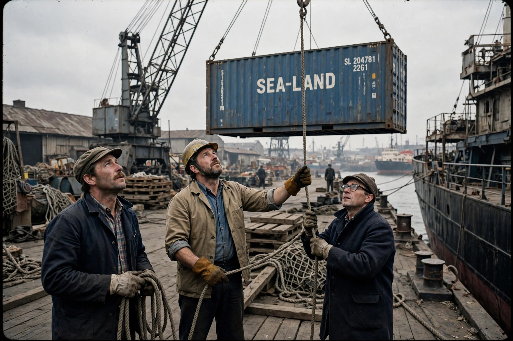

Containerization
From Wikipedia, the free encyclopedia

Containerization (image regenerated from memory)
Containerization is a system of intermodal freight transport using intermodal containers — standardised, reusable steel boxes — that can be transferred between ships, trains and trucks without unloading the goods. Devised commercially by Malcolm McLean in 1956 and standardised by ISO in the late 1960s, it cut the cost of shipping goods by more than 90% within a generation, collapsed port labour costs, and is widely credited as a primary enabler of late-20th-century globalisation.
The problem before
Break-bulk shipping loaded individual crates, barrels and sacks by gangs of dockers; a ship might spend more time in port being loaded than at sea, freight cost varied wildly, and theft and damage were rife. Loading a medium ship cost about $5.86 per ton in 1956; with containers it fell to about $0.16 per ton.
McLean and standardisation
Trucking magnate Malcolm McLean launched the Ideal X voyage (Newark–Houston, 26 April 1956) with 58 containers on a converted tanker. Rival systems (Matson, Sea-Land) converged on ISO standards for corner fittings, lengths (20/40 ft) and strength, while railroads and ports built dedicated cranes and terminals.
Consequences
Old break-bulk ports (London\'s upstream docks, New York piers) died as container terminals opened at deep-water sites (Felixstowe, Tilbury, Port Newark, Singapore, Shenzhen). Manufacturers relocated production to East Asia as freight became a minor cost; the container became, in The Economist\'s phrase, a box that \'shrank the world\'.